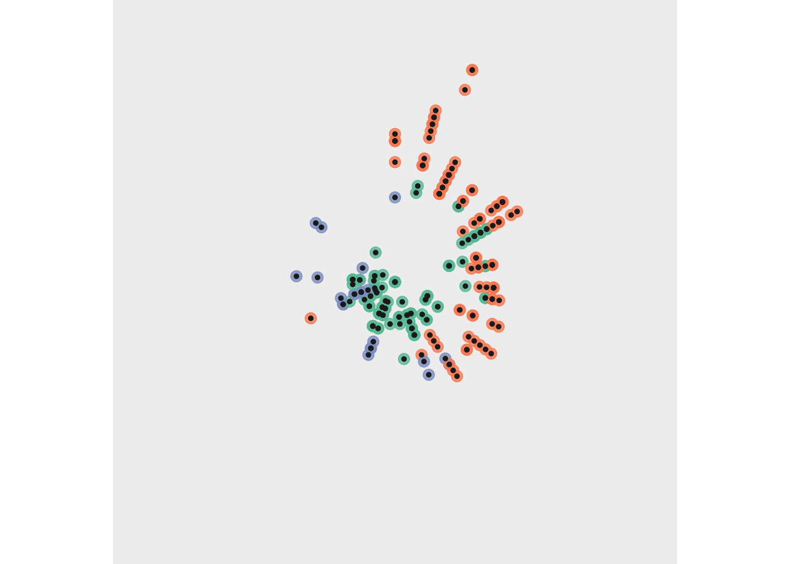

# Use the built-in `mpg` dataset to create an abstract scatterplot
mpg_subset <- mpg
ggplot(mpg_subset, aes(x = displ, y = hwy, colour = drv)) +
geom_point(show.legend = FALSE, size = 3, alpha = 0.8) +
geom_point(show.legend = FALSE, size = 1, colour = "#222222") +
coord_polar() +
scale_color_brewer(palette = "Set2") +
theme_void() +
theme(
plot.background = element_rect(fill = "#f0f0f0", colour = NA),
panel.background = element_rect(fill = "#f0f0f0", colour = NA)
)